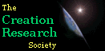
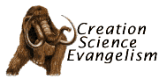
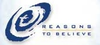

- Centro Nacional para la Educación en Ciencia
- La Red de Servidores de Listas de Evolución de AIBS/NCSE
- Organizaciones Locales Pro-Evolución/Anti-Creacionismo
- La Afilación Científica Americana
- Organizaciones Creacionistas y Anti-Evolucionistas
- Agradecimientos y Descargos de Responsabilidad
Centro Nacional para la Educación en Ciencia
En los Estados Unidos, solo existe una organización nacional cuyo único propósito es apoyar la evolución y oponerse al creacionismo. Se trata del National Center for Science Education (NCSE). Si necesita ayuda contra la actividad creacionista en su área local, esta es la organización a la que debe contactar.
| National Center for Science Education 420 40th Street Suite 2 Oakland, CA 94609-2509 Teléfono: (510) 601-7203 Fax: (510) 601-7204 ncseoffice@ncseweb.org |
- Su página principal es un lugar útil para encontrar noticias recientes relacionadas con el creacionismo/evolución.
- En este momento, el costo de la membresía para quienes están en los Estados Unidos es de 30 dólares al año. Para quienes están fuera de los EE. UU., es de (EE. UU.) 37 dólares al año o (EE. UU.) 39 dólares al año si se envía por correo aéreo. Los miembros reciben seis números al año de Reports of the National Center for Science Education (originalmente Creation/Evolution). Aquellos que deseen unirse pueden unirse en línea o utilizar la dirección anterior.
- El NCSE tiene una lista de correo de bajo volumen y gratuita lista de correo para noticias y eventos en la controversia del creacionismo/evolución.
- El NCSE tiene algunos artículos útiles artículos en su sitio web para aquellos que desean apoyar activamente la educación en evolución.
- El NCSE tiene una librería en línea para libros relacionados con la evolución o el creacionismo. Una parte de las ventas va a la organización.
La Red de Servidores de Correo de Evolución AIBS/NCSE
La Red de Servidores de Listas de Evolución de AIBS/NCSE es un esfuerzo conjunto de The American Institute of Biological Sciences y The National Center for Science Education. Proporciona listas de correo de bajo volumen para la mayoría de los cincuenta estados de los EE. UU. más Canadá. Es una forma útil para mantenerse al día con la actividad creacionista en su propio vecindario.
Organizaciones Pro-Evolución/Anti-Creacionismo Locales
Reino Unido de Gran Bretaña e Irlanda del Norte
Estados Unidos de América
También consulte: Ciudadanos por la Ciencia, una red de grupos locales, y Vota por la Ciencia.
Alabama
Colorado
Florida
Georgia
Iowa
Kansas
Míchigan
Minnesota
Misisipi
Nebraska
Nuevo México
- Coalición por la Excelencia en la Educación en Ciencias y Matemáticas
- Nuevomexicanos por la Ciencia y la Razón
Ohio
- Ciudadanos de Ohio por la Ciencia
- Ayuda a la Educación Pública de Ohio o HOPE (apoya candidatos políticos)
Oklahoma
Pensilvania
Carolina del Sur
Texas
Estado de Washington
La afiliación científica estadounidense
The American Scientific Affiliation (ASA) es una organización cristiana que no toma ninguna posición oficial sobre el debate creación/evolución. El objetivo de la ASA es proporcionar un foro abierto para la discusión de tales temas desde la perspectiva del cristianismo. La membresía en la ASA requiere firmar una declaración de fe y poseer al menos un título de licenciatura en ciencias. (Existen otras categorías de membresía para aquellos sin títulos relevantes.)
| The American Scientific
Affiliation P.O. Box 668 Ipswich, MA 01938 Teléfono: (978) 356-5656 Fax: (978) 356-4375> asa@asa3.org |
- Información sobre la membresía y/o unirse en línea.
- Perspectives on Science & Christian Faith es la revista de la organización. Los miembros reciben automáticamente la revista. Los no miembros y las instituciones también pueden suscribirse.
- The ASA/CSCA Newsletter es la publicación bimestral de la ASA y la Canadian Scientific and Christian Affiliation.
- Faith-Science News ofrece noticias en línea de interés para la ASA.
Otros enlaces:
|
Organizaciones Creacionistas y Anti-Evolutivas
Respuestas en el Génesis
Answers in Genesis (AiG) es probablemente la organización creacionista de la Tierra joven más importante. Originalmente formada como la Fundación de la Ciencia del Creacionismo en Australia, ahora tiene su sede cerca de Cincinnati, Ohio, con sucursales en otros seis países. Está construyendo un gran museo para promover sus puntos de vista. Tiene una declaración de fe, una colección extremadamente grande de artículos con un artículo destacado diario, y organiza muchos eventos en todo Estados Unidos. The Kentucky Post tiene un muy buen artículo sobre las actividades, planes y finanzas de AiG.
| Answers in Genesis P.O. Box 6330 Florence, Kentucky 41022 Teléfono: (859) 727-2222 Fax: (859) 727-2299 Direcciones de las sucursales |
- Answers Update es un boletín gratuito. AiG no venderá su dirección. También disponible en línea.
- Creation Education Center ("preparando y capacitando a padres y educadores para reconectar la Biblia con el mundo real") tiene un boletín semanal enviado por correo electrónico.
- Creation (anteriormente Creation Ex Nihilo) es una revista trimestral dirigida a audiencias populares que busca presentar la "evidencia" contra la evolución. También disponible en español.
- TJ (anteriormente Creation Ex Nihilo Technical Journal) se publica tres veces al año. Similar a la revista anterior, excepto que trata temas más técnicos.
- Answers...With Ken Ham es un programa de audio de 90 segundos transmitido los días laborables en muchas estaciones de radio, con copias disponibles en línea. Se pueden encontrar producciones más largas ocasionales en el enlace anterior también.
Actualización (4 de marzo de 2006): Ha habido una ruptura en AiG. La rama estadounidense se separó de AiG internacional afirmando que no quería estar "sujeta a un sistema internacional de representación de controles/equilibrios/revisión por pares que involucra a todas las otras oficinas que llevan el mismo 'nombre de marca'." Las ramas de Australia, Canadá, Nueva Zelanda y Sudáfrica se han renombrado como Creation Ministries International (CMI). Después de la ruptura, AiG eliminado un artículo que atacaba a Kent Hovind de Creation Science Evangelism mientras que CMI publicó el artículo. CMI posee Creation y TJ, que ha sido renombrado como Journal of Creation. Answers in Genesis está introduciendo una nueva revista llamada Creation Answers.
Instituto de Descubrimiento
El Instituto de Descubrimiento (DI) es un think tank conservador con sede en Seattle, Washington. Es la organización detrás de muchas de las recientes intentos de incluir el "diseño inteligente" o la "evidencia" contra la evolución en la instrucción científica. El Centro para la Ciencia y la Cultura es la parte del DI que ataca la biología evolutiva y el uso del naturalismo en la ciencia. Las posiciones exactas de sus miembros varían desde creacionistas de la Tierra joven hasta aquellos que aceptan la descendencia común con Dios tomando un papel muy activo en la guía de la evolución. La mayoría de los miembros parecen negar la descendencia común.
| Instituto de Descubrimiento 1402 Third Ave Suite 400 Seattle, WA 98101 Teléfono: (206) 292-0401 Fax: (206) 682-5320 |
El resto de las organizaciones creacionistas se listarán en orden alfabético.
Red de Acceso a la Investigación
Access Research Network (ARN), originalmente Students for Origins Research, es una organización que aboga por el diseño inteligente. Su sitio web tiene artículos, tiene páginas para muchos defensores del diseño inteligente, y tiene un Currículo de ciencias para escuelas elementales.
| Access Research Network P.O. Box 38069 Colorado Springs, CO 80937-8069 Teléfono: (719) 633-1772 |
- Origins & Design es una revista "interdisciplinaria revisada por pares" trimestral.
- ARN Announce es una lista de correo para anuncios de ARN.
- ARN Discussion Forum es un tablón de discusión que permite la participación de todos los bandos.
- Wedge Update es una columna de noticias en línea para defensores del diseño inteligente.
Sociedad de Investigación Creacionista
La Sociedad de Investigación Creacionista (CRS) se formó en 1963 por individuos que no estaban de acuerdo con el evolucionismo de muchos de los miembros de ASA. Los miembros votantes de la CRS deben tener al menos un título de maestría en ciencias y suscribirse a una declaración de creencias. Aunque es más conocida por su "revista", también tiene una gran librería. La CRS opera el Centro de Investigación Creacionista Van Andel en Arizona.
 |
Sociedad de Investigación Creacionista Caja Postal 8263 St. Joseph, MO 64508-8263 contact@creationresearch.org. |
- Revista Cuatrimestral de la Sociedad de Investigación Creacionista es una revista "revisada por pares" cuatrimestral que reciben todos los miembros. Probablemente sea la más "académica" de las publicaciones de la Tierra joven. Los no miembros pueden suscribirse.
- Asuntos Creacionistas es un boletín bimestral de la CRS.
Evangelismo de la Ciencia Creacionista
Evangelismo de la Ciencia Creacionista es la organización de Kent Hovind, quien se autodenomina "Dr. Dino". Hovind a menudo es considerado un charlatán incluso dentro de los círculos del creacionismo de la Tierra joven, aunque cuenta con un gran número de seguidores. Es famoso por una "oferta" de pagar $250,000 a quien pueda probar la evolución. Hovind y su hijo realizan numerosos seminarios en todo Estados Unidos y existe una versión en línea.
 |
Evangelismo de la Ciencia Creacionista 29 Cummings Road Pensacola, FL USA 32503 Teléfono: (850) 479-3466 (9-5 Lunes a Viernes, hora del Este) Teléfono: (877) 479-3466 Fax: (850) 479-8562 Página de contacto |
Instituto de Investigación en Geociencias
El Instituto de Investigación en Geociencias (GRI) es una organización adventista del séptimo día, afiliada con la Universidad Loma Linda y con oficinas en Argentina y Francia. Adhiere a las creencias adventistas. (Véase también los enunciados de Ellen G. White sobre la Geología.) Posee recursos para profesores de "ciencia" y muchos informes sobre temas creacionistas.
| Instituto de Investigación en Geociencias 11060 Campus Street Loma Linda, CA 92350 Teléfono: (909) 558-4548 Fax: (909) 558-4314 |
- El GRI tiene tres revistas: Origins, Geoscience Reports y Ciencia de los Orígenes.
Instituto para la Investigación del Creacionismo
El Instituto de Investigación del Creacionismo (ICR) es una organización líder de la Tierra joven con sede cerca de San Diego, California. Es muy similar a AiG. Tiene un museo y una escuela de posgrado que ofrece másters en diversas áreas. Tiene una declaración de fe y originalmente formaba parte de Christian Heritage College.
| Instituto de Investigación del Creacionismo 10946 Woodside Ave. North Santee, CA 92071 Teléfono: (619) 448-0900 Fax: (619) 448-3469 |
- Actos & Hechos es el boletín mensual del ICR.
- Impacto es un artículo mensual.
Razones para creer
Reasons to Believe (RTB) es una organización creacionista de la Tierra antigua fundada por el astrónomo Hugh Ross. Tiene una declaración de fe, cuenta con varias capítulos en los Estados Unidos así como en varios otros países, y una tienda en línea tienda.
 |
Reasons To Believe P.O. Box 5978 Pasadena, CA 91117 Teléfono: (626) 335-1480 |
- Connections es un boletín trimestral disponible en línea.
- Creation Update es un programa de "radio" transmitido semanalmente.
- Message of the Month es una serie de casetes de audio para aquellos que comprometen al menos 30 dólares al mes.
Ciencia
Fundación de Investigación
La Fundación de Investigación Científica es una traducción de Bilim Arastirma Vakfi (BAV). (Tenga en cuenta que la "s" en "Arastirma" debería tener una cedilla.) Es un grupo creacionista islámico de Turquía que tiene mucha influencia en Turquía. Muchos de los libros y artículos que promueve son traducciones del autor que va por el seudónimo de Harun Yahya, quien tiene un sitio web en inglés, turco y muchas otras lenguas. Posiblemente el libro más conocido de él es Engaño de la Evolución. Otros sitios web de BAV sobre creación/evolución incluyen el Creación del Universo y El Colapso del Darwinismo. Harun Yahya también ha tenido al menos un artículo publicado en un sitio creacionista de EE. UU. y es el autor de un libro que niega el Holocausto libro. Una página anterior de BAV listó un libro llamado El Engaño del Holocausto como escrito por Harun Yahya. Las dos últimas oraciones han sido cuestionadas por lo que ahora están documentadas en Harun Yahya y el Revisionismo del Holocausto.
- BAV tiene un boletín de correo electrónico.
Agradecimientos y Descargos
La versión original de este FAQ fue escrita por Chris Stassen. Varias de las redacciones del artículo fueron tomadas de su archivo original. Todos los logotipos están protegidos por derechos de autor y/o marcas registradas por las organizaciones que representan. Adam Marczyk señaló una serie de errores en mi gramática. "Ateólogo" y Wesley Elsberry proporcionaron enlaces sobre la negación del holocausto de Harun Yahya. Cualquier error factual, error gramatical, error tipográfico u omisión es exclusivamente responsabilidad del autor.